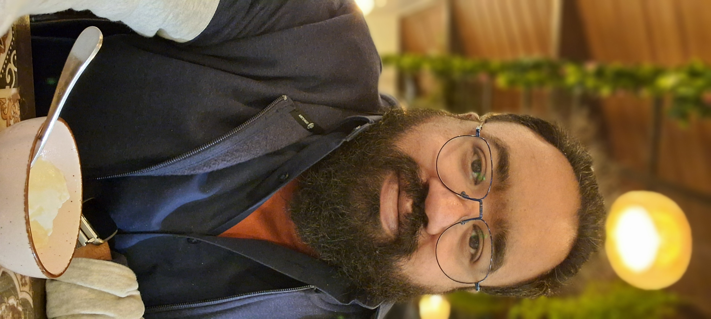
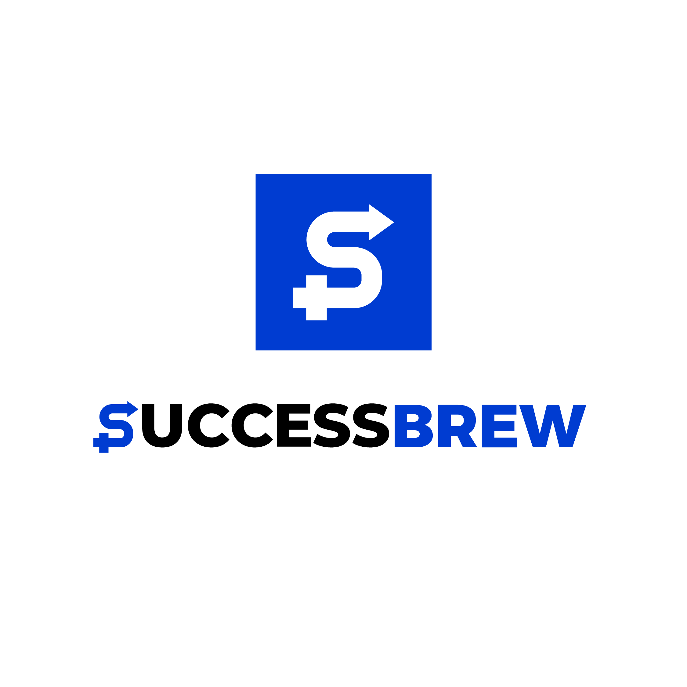
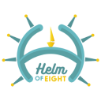

GGITS
Multiple sessions. Empaneled mentor for the E-Cell and incubation center.
Founder, GTM strategist & community builder
Finding markets. Building communities. Helping founders grow.
I work with founders, teams and startup ecosystems to shape go-to-market strategy, build engaged communities and turn ideas into sustainable businesses.

I was a college student when I started working with startups in 2011. Since then I’ve built companies, communities and operating systems across very different worlds.
My lesson is simple: slow down to validate the idea, build the product properly and create systems that can scale. Then, when the foundation is right, grow aggressively.
My work connects GTM strategy with community building: understanding an audience, creating value and building relationships that support long-term growth.
I help teams understand their audience, shape a clear offer and build the relationships and systems that support growth.
People, customers, data, context. No assumptions before the facts.
Define the audience, positioning and path to market.
Create shared value, participation and a reason to return.
Test with real people, listen to feedback and build on what works.
Go-to-market connects customer understanding, positioning, demand and distribution. I help founders validate the opportunity, shape the offer and build a practical path to revenue.
From founder ecosystems to reader communities, I build spaces around shared interests, useful connections and a sense of belonging.
Work with me ↗At Letshang, I work across positioning, demand generation and growth systems, connecting strategy with the day-to-day work of reaching the right audience.
Let’s build together ↗

Working with students, faculty and founders to turn entrepreneurial curiosity into practical next steps.
Selected sessions and mentoring associations from my work with colleges, universities and incubators.
Invite me for a session ↗Multiple sessions. Empaneled mentor for the E-Cell and incubation center.
Empaneled mentor for the incubation center and MBA programme.
External mentoring and empaneled mentor at the incubation center.
Multiple sessions for students on entrepreneurship and technology.
Multiple sessions on design thinking and designing products for the new era.
Sessions on design thinking and business model canvas. Empaneled mentor and jury member for fundraising.
Led a three-day Kickstart Bootcamp.
Workshop on user-centric design.
Led an entrepreneurship development programme.
Empaneled mentor for the Genesis incubation programme and chief guest multiple times for the annual event.
Empaneled mentor. Currently mentoring three startups.
Empaneled mentor for their startups.
Empaneled mentor with multiple sessions for their startups.
Empaneled mentor.
Empaneled mentor with multiple sessions for their startups.
I’m building dashboards, products, websites, automations and workflows with AI. This is where I’ll share the useful parts: what I built, why I built it and how you can start.
A personal automation layer for moving information through the parts of life and work that matter.
Ask me about it ↗Small tools and dashboards built to answer real questions and make work more hands-on.
See the next build ↗Prompts and getting-started documents to help you build your own systems with AI.
Get the playbook ↗A practical 26-slide field guide to finding the right problem, scoping the experiment, choosing tools, building safely and learning from real users.
FarmtoCups and Crust & Kettle keep me close to ingredients, customers, compliance and the operational truth of building an F&B business.
I work across sourcing, recipes, product development and the B2B funnel around high-quality flowers grown in India.
I build SOPs, modular systems and structures that make food operations more efficient and ready to scale.
Stories teach me how to build narratives that people want to enter.
Harry Potter · Eragon · Actionable GamificationCooking is where I create: designing something out of nothing.
Recipes, authenticity, and the occasional obsessionNew places are a way to collect better questions.
Always learning from the roadI care about ethical building, access to education and the roots of how economies work.
Ex-Teach For India fellow · mentorLooking for a GTM collaborator, a community-building partner or a session for your college or incubator? Let’s talk about your audience, your goals and what we can build together.